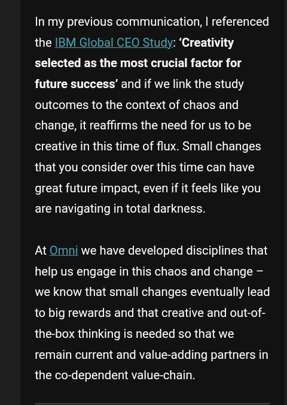
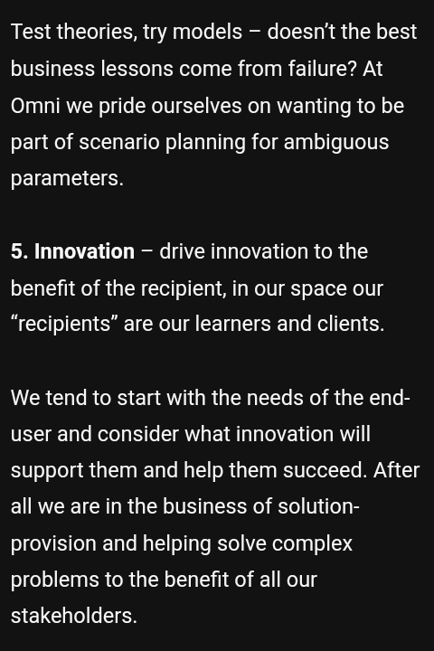
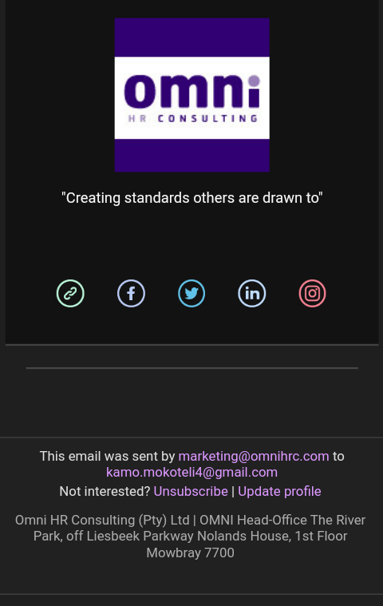
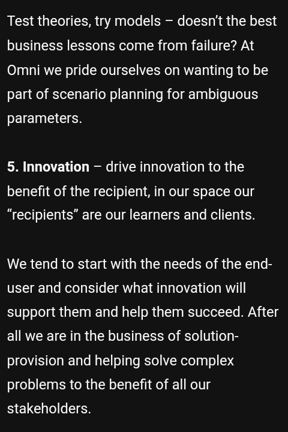
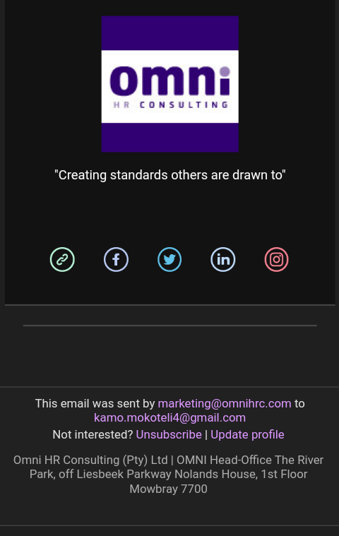

Open Letter To
Author | Kamohelo Mokoteli - Organisation | Lyime
"Originality is the aspect of creation that works unique in style and substance. Only the truly creative can be original. Stemming from genuine innovation, novelty and imagination. Original people live stories rather than lives. With Originality comes the embracing of difference, individuality and invention. There is no prescribed look for a true designer as they create the yarn. BE ORIGINAL."
The Truth.
"Truth is the expression of all that exists. Truth is simply that which is, and all of that which is encompasses the Truth. This means that ultimately, Truth is comprised of all information, in all space, times, frequencies and dimensions of existence. Truth is unwavaring. It simply is, and it is always simple. It is only our perception that wavers either toward the Truth or away from it - but the Truth itself is simply that which is. Some will attempt to sell you the lie that there is no Truth, that which is true can never be known, or that it is only our perceptions of the Truth that comprise reality. At worst, these are deliberate lies by those intentionally attempting to mislead us. At best, these are ill-formed opinions of the several misguided. The Truth is that the Truth exists. It is Knowable. You can become increasingly aware of it in your own experience. This is, in fact, the reason we exists. A human being's sensory organs are hard-wired to perceive information contained only within an extremely narrow bandwidth range compared to all that actually exists. Our ability to receive and process information through these organs is known as our senses. These include sight, hearing, smell, taste and touch. There is also a sixth sense we possess (though many do not believe it exists) called Intuition - a state of simple knowing, the ability to recognize an aspect of the Truth without consciously being aware of exactly how we know it.
I would not make the claim that human beigns in their current forms can know the whole Truth of all Creation, for the sensory organs we possess are not capable of receiving information that exists outside of their perceptual limits. We often use technology as an extension of our natural senses to become aware of information that lies outside the limits of our sense perception. But technology also has its limits, and so much information lies outside of the perceptual limits of any technology we currently possess, or may invent in the future. What i am claiming, is that we are capable of knowing the body of information which has come into manifestation and lies within the perceptual limits of both our senses and technology. This means that we are most definitely capable of becoming aware of that which is happening both within ouselves, and in the manifested events of the world in which we live - the realm that we call Earth. This information will always be knowable because the reality in which we live is holographic in nature. This means that the Truth about the universe in which we exist (the marcocosm), is revealed to us through the process of becoming increasingly aware of even the smallest parts (the microcosm) that comprise the whole. This is another way of saying that in order to become more aware of how the cosmos is structured and behaves, we must become more aware of how we ourselves are stuctured and behave. Through this increase in awareness, the parts of the whole become more aware of themselves, and thus more of the whole of which they are a part . In this way, the whole of the Cosmos becomes more aware of itself, and thus the Will of Creation is accomplished.
Because the Truth is manifested holographically, the information comprising the Truth can never be destroyed, for it is literally contained within every single thing in creation. Thus the truth is systemically preserved. The only way it could ever possibly be eradicated would be to destroy every element in all creation, which, to the best of my knowledge, no one has been able to do just yet. I know that, regardless of who may appear to be in power or control at any given time, the Truth will always conquer."
JANUARY 30 2023 - Ditabe & Wagner Attorneys
Letter To Shoprite and Omni HR2. We are instructed that the Shoprite Checkers Group, together with the Shoprite Checkers Development Trust, (hereinafter collectively reffered to as "Shoprite") Advertised a learn and earn program in 2016, to which our client applied. This program was launched by Shoprite in Partnership with Omni Hr Consulting (PTY) LTD (hereinafter"Omni HR").
3. We are instructed that the program had as its core concepts the operation of small businesses within the retail sector, which was stressed throughout the program. In essence, it taught students about the retail sector, exposed them to same in the form of employment, with the aim of the students developing their own small businesses within the sector.
4. Our client applied for, was accepted, and enrolled on the program on or about January 2016, and attended classes at Omni HR’s Suncardia Regional Training Venue in February 2016 for approximately 1 month after which he was employed at the Checkers at the Village in Moretele View, Pretoria for approximately 1 month (March 2016). Our client thereafter left the employ of Shoprite
5. Our client developed various ideas, constituting intellectual property, to improve the Money Market and the retail shopping experience offering by Shoprite and presented same to Omni HR with a view of them arranging a meeting with Shoprite to enable the presentation of the idea. Our client sent various emails between 13 March 2017 and October 2017.
6. Kindly further take note that Omni HR arranged for a meeting for our client to present his ideas, which meeting took place at the Suncardia Regional Centre on or about 3 August 2017 at which our client presented his ideas to improve Shoprite’s products. The said meeting was also attended by the following personnel from Omni HR: 6.1.David Londt (head of IT); 6.2.Done Basson (National Manager); 6.3.Dorothy Fernandez (regional manager overseeing Shoprite engagements).
8. Our client has noted that his ideas were implemented by Shoprite in 2020 and he received no credit for same.
When an individual trust another individual, connections of sharing becomes easy. You can receive an inspiration for an idealogy you've been working on for quite some time; and still, avoid cheating intelligence of inspirations that are connected with you from the creative plane of thought; hence you won't know the impact of results created: good or bad.
I believe from the creation of my existence on the realm of this Earth; that I have interconnected The Money Market account Application with my insight research and ideation design that I've managed to obtain while I was Studying knowledge and experimenting with it by working at almost all the departments including money market, groceries within one month at a Checkers store.In the financial technology industry; which is still in its uncetainty. Organisations implementing FinTech within their business model are more likely to produce a ten year-in-market prototype; which is the results of uncetainty of safety. When I invented the gift points app; my aim was to further allow advancement of eradicating the uncetainty by so to secure a much more safer financial technology environment.
What I mean by a much more safer environment ; I am simply saying the truth of apps might not offer federal deposit insurance. When you allow an individual to purchase a product, and for each product paid for, they receive a money gift point and after a while collecting those gift points: they exchange into money that can be reinvented into other usage: we call this process a rewards system. In creation, when launching solutions, it is vital to never exclude any given/collected information regarding all aspects of creation. By doing so, you are serving the masses with an unfulfilled desire of innovation; which is unsafe.The iterative design cycle launch requires implementation institutes support and regulatory law unifies concepts manifestation for success.
Sending money through your smartphone from money that another individual sent you is a normal norm. The difference is how secure that process is. When sending money that will be withdrawn at a point of sale, but that capital was received from money gift points is a certainty that technology is a disruptive force. Unfortunately, when individuals only deposit money from their own funds accounts with no rewards system in place to secure certainty of safety, it means: you have launched a ten year-in-market prototype and the users are not aware of how unsafe money stored in online banking prototype apps often is not protected by federal deposit insurance.Generative Artificial Intelligence will dusrupt the implementation of payment processing of including your cvv number - account number - date of bank card expiry. Suppose you send an individual money, and everytime you do so; rewards gift points are received that can be exchanged into money that can be re-send to another, withdrawn, use to pay for goods using qr code scanning (suggestion of this scan was from Omni HR: 6.1.David Londt (head of IT). Concepts of online rewards is simply to produce deposit insurance safety if the nonbank payment app's business fails, your money is likely lost or tied up in a long bankruptcy process.
".png)
Shoprite Money Market Account Website Payments (July2021). "
.png) "
"
Money-Market-Account-Ts-Cs.
.png) "
"
MMA_Complaints Procedure stores Oct 2021.
The Lie.
"Lies and Deception are the enemy of the Truth. They are put forward into the minds and hearts of the people on Earth by those who rage against what is. They are spoken, propagated and acted upon by those with a vested interest in keeping the understanding of the Truth from reaching the Consciousness of each individual. Lies and deception are insidious, for once they have been believed and accepted by well-meaning individuals, these individuals , in their ignorance, become agents for the spread of these falsehoods. This is how lies and propaganda are spread from generation to generation. A parent is indoctrinated into the lie, and then the parent indoctrinates their children, who in turn indoctrinate their children, and so on, down through the generations.
speaking about the most effective way to propagate the spread of lies and disinformation to as many people as possible, Adolf Hitler,
the Fuhrer of the Nazi Third Reich, stated that one should "make the lie big, make it simple, keep saying it, and eventually they will believe it." This statement clearly shows that the real goal
of those who are bent on the attainment of totalitarian power is to actually control the minds and belief systems of those upon whom they impose their rule.
If there is anyone who ever live who knew ever more about how to spread lies and propaganda than Adolf hitler, it would be Paul Joseph Goebbels, The Minister of propaganda
of the Nazi Party during the Third Reich. Goebbels ordered countless book burnings while he was in power in an attempt to crush even the discovery of any dissenting ideas.
Almost every form of communication possible in Germany during the Nazi regime came under the direct control of this mentally ill being. Goebbels made a profound statement regarding
lying, an activity at which he quite obviously excelled. He claimed that "the bigger the lie, the more it will be believed." This statement touches upon a very important
factor to consider that Goebbels well understood. Most people are very prone to a condition that is the equivalent to a state of deep psychological denial.
No matter how insane or destructive a lie that they have accepted may be, if the lie is deeply enough embedded within a belief system, people will be loathe
to challenge it, for doing so would require them to step out of a rigidly-defined comfort zone and begin to challenge their belief systems themselves. Sadly,
relatively few people ever venture outside of this comfort zone and make these challenges to established beliefs in the name of the discovery of Truth.
One could spread a lifetime listing and analyzing all the lies that have been disseminated by systems of instituionalized thought throughout
the world. But there is one lie that is bigger and more insidious than all other lies that have ever been told. This is the lie that contends that there is no Truth, or that even
if there is, that it could never become known or comprehended by human beigns. This is The Biggest Lie that has ever been spoken, written, bought or sold
by anyone. If one believes this lie, one's spiritual journey comes to a halt before it has a change to begin. Many, many people throughout our world are stuck at this point
in their evolutionary development because they have bought this poisonous lie, hook, line, and sinker. The Truth is knowable. You can know it. If it weren't,
nothing would have ever existed, for the realization of Truth is the very purpose of existence itself. This is not a belief. This is simply what is. Truth can never be destroyed.
The Biggest Lie is the only stage in this process for which faith is required. One must first have faith in the fact that we are capable of discovering the Truth.
From that point forward, faith and belief become no longer necessary, only the will to go forward and discover the Truth of that which is." 3. At the outset we wish to advise that our client does not intend to respond to each and every allegation
contained in your letter, and our client's failure to do so should not be construed as an admission of
the correctness of any such allegations or concession of any kind. Our client expressly reserves the
right to respond more fully to any such allegations at the appropriate time and in the appropriate
forum, should it be required. 4 After receiving your letter, our client contacted Omni HR Consulting (Pty) Limited ("Omni HR") to
obtain information with regard to subject matter thereof and was furnished with copies of the following
emails, copies of which are attached, which our client has now had sight offer the first time -
4.1 an email dated 9 October 2017 sent by your client to Dorothy Fernandez of Omni HR (who is
referred to in paragraph 6.3 of your letter), from which it can be noted that your client apologises
for cancelling the presentation of his "idea" to our client due to other commitments which he
needed to attend to (marked as annexure "A");
4.2 an email dated 4 July 2017 which purports to set out your client's "ideas" (marked as
annexure "B") 5 Our client's instructions are that it did not receive any proposal or information which your client may
have presented or provided to Omni HR at that time and that it has only now had sight of the emails
referred to above. It is apparent from paragraphs 5, 6 and 10 of your letter that your client presented
his "ideas" to Omni HR and not to our client. 6 We do however record that the items listed in paragraph 7 of your letter and as contained in the
email of 4 July 2017, in respect of which your client alleges to somehow have a protectable
proprietary interest, are in no manner or means unique and are adopted and used by retailers not
only in South Africa but elsewhere, and are as a result unquestionably in the public domain. 7 We refer to paragraph 7 of your letter of demand and comment below.
7.1 Paragraph 7.1
7.1.1 With regard to the allegation that your client developed an idea of including basic banking
services as part of the Money Market offering, our instructions are that our client has been
working on a banking service or a mobile wallet for almost 10 years which can only be
offered by a party which holds a banking licence.
7.1.2 A banking service has been in the pipeline of our client's services and which has not been
implemented due to the stringent regulatory and compliance requirements. As a result, to
the extent that your client can claim any proprietary rights to the inclusion of a banking
service, which is denied can ever be the case, our client will be in a position to show that
this was part of its pipeline products and which it will be able to prove if this may be
necessary. 10.1 the features listed as your client's "ideas" in your letter and as contained in the email referred
to in 4.2 above are certainly not novel, including in relation to the retail industry, and as a result
cannot constitute proprietary information to which your client can claim a proprietary interest to
the exclusion of all others;
10.2 in any event and not detracting from the above, on your client's own version and as verified by
our client, such "ideas" were conveyed to Omni HR and not to our client with our client verifying
that it only recently received copies of the emails referred to in 4 above from Omni HR after
carrying out investigations subsequent to receiving your letter. When an individual invest money in you, that individual's purpose is to archieve
a certain desire. After a while once that certain desire is in process; the Initial Investor have every right
to know what is happening with their investment, results of outcome that over time to time, the individual will
host meetings to brain storm on the results and outcomes of their journey of partnership.March 24 2023 - WERKSMANS Attorneys
Letter to Ditabe Wagner Attorneys
Operating a small business in the retail environment taught me; establish a small business that must operate within the retail chain e.g Shoprite Checkers: where by; we will help you sell your products/services within our chains of retail stores. Your product/service must be unique to sell; with a new brand and taste, What is Marketing your small business, Finance: the knowledge of how to generate a selling price; which will help you draft a proper financial plan - assets and liabilities, and drafting a business plan that works.
Discovering the Truth reveals that such information assisted me to overcome problems I noticed at a Checkers Store: by inventing a solution of a system that will connect groceries and retail money market by including the usage of USSD platforms in one design, and because the Truth cannot be destroyed: Operating a small business within the retail environment teachings were propaganda, lies taught by indoctrinated Lying generation. In retail, when presenting a unique solution regarding all aspects of technology; the biggest problem: Inflation rates - impact on the price of bread (20 years) 2018 (R13) @15% p.a to 2038 (R212), @8% p.a (R60), @6% p.a (R42), @4,5% p.a (R31); Currently effective: 27 January 2023 - The monetary policy committee increases the repuchase rate by 25 basis points to 7,25%, up from 7% from the previous monetary policy committee. When customers store money in a crocery voucher for only the purpose of groceries, it is important to reward that process with money due to unlike deposits in savings accounts at federally insured banks, funds stored in many apps aren't automatically protected, potentially putting cash at risk, and so if your technology is not unique; it is not worth it as it is not promoting cost-effectiveness. The more Beta and prototypes are launched, the worse for the maket to fully advance. When rewarding money to a customer is worth R40, and bread cost R60, your customer's funds is insured as they will spend R20 from their pockets to purchase bread; of which this means: when the app stumbles financially due to Generative Artificial Intelligence, just like the covid-19 pandemic stumbled retail money market; customers will not loose R60 through bankruptcy, but only R20. The retail money market revenue stream is R10; and when it comes to technology, you cannot price your product too high, because the truth of technology is about cost-effectiveness, efficiency and simplicity and so the appropriate pricing of the app revenue stream is R5, and that's how I managed to inspire your ten year retail money market business. In 2016, It was 10 years old and you didn't know anything until when I discovered within 12 months; online peer-2-peer payments (with bank card money transtactions option despite retail cash deposit) connected with grocery vouchers; that uses qr codes for payments, with a savings account of keeping the money stored until funds have exceded limits without expiry date, a money gift points rewards system to advance federal deposit insurance safety, the usage of USSD (*123*1#) platform connected with the app and R5 revenue stream model.The meeting between me and Omni HR management; was to gain insight knowledge about the research email I've sent (04 July 2017), as it was me answering questions about "Operating a small business in a retail environment", thus, my first email (info@omnihrc.com):
"3/13/2017 - In February 2016, I was part of the Shoprite Checkers Development Trust in partnership with Omni HR Consulting for the Operating a Small Business in a retail environment skills programme. I went to the Checkers The village store in Moretele view, Pretoria East. While working at the store, the tools and basic skills I've learned from the programme, has helped me identify and come up with a technology based innovative idea that will help Shoprite Checkers improve their customer experience/convenience with a unique business model. I would like Omni HR Consulting to help me arrange a meeting with Shoprite Checkers to make a presentation regarding the business opportunity I have innovated". On 19 August 2017 @Suncardia Regional training centre; I used Nomthandazo Masango's computer desktop to draft a power point presentation titled: Shoprite Checkers Gift Points App, of which it was sent to Done Basson; and she replied @Kamo I will forward it to David. To honest; when someone decides to cancel an adventure, you have no right to implement it without their approval. After sending a cancellation email (9 October 2017) to both Dorothy and Done: Done Replied - "I'm sorry that you feel this way. These things Unfortunately takes time, and I would like suggest that you just put it on the back burner for now and not give up on it completely. These things usually happen when you least expect it. Good luck with all your projects and may you be successful." Indeed "These things usually happen when you least expect it"; On 5/11/2020, That's 3 years (long time) after cancelling my power point presentation ideation to Shoprite: out of 100 and 100 of students that Omni taught, the MD decided to tag only me out of those students and I received the following email; which was just a reminder about my cancelled ideation; of which my senses wispered that it has been implemented without my approval and credit:  


